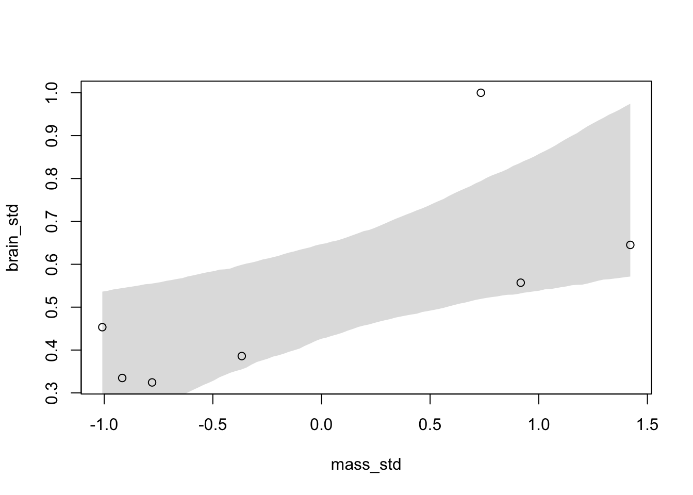
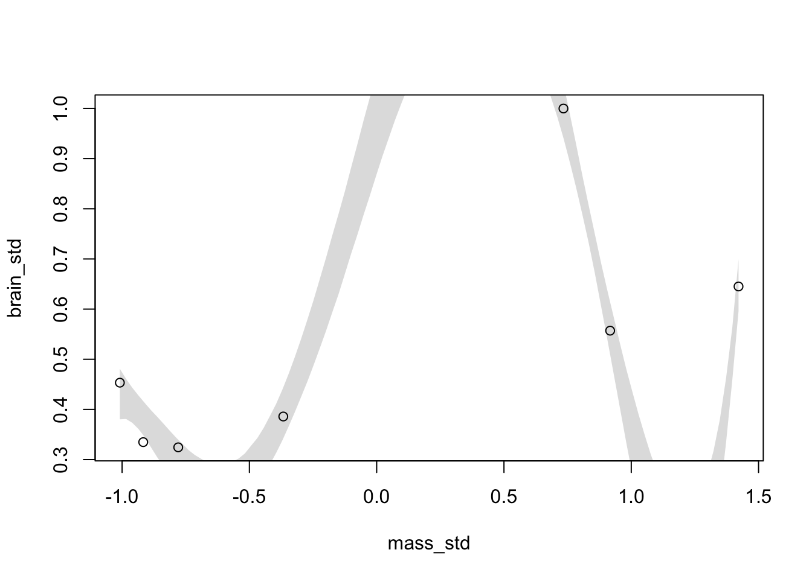
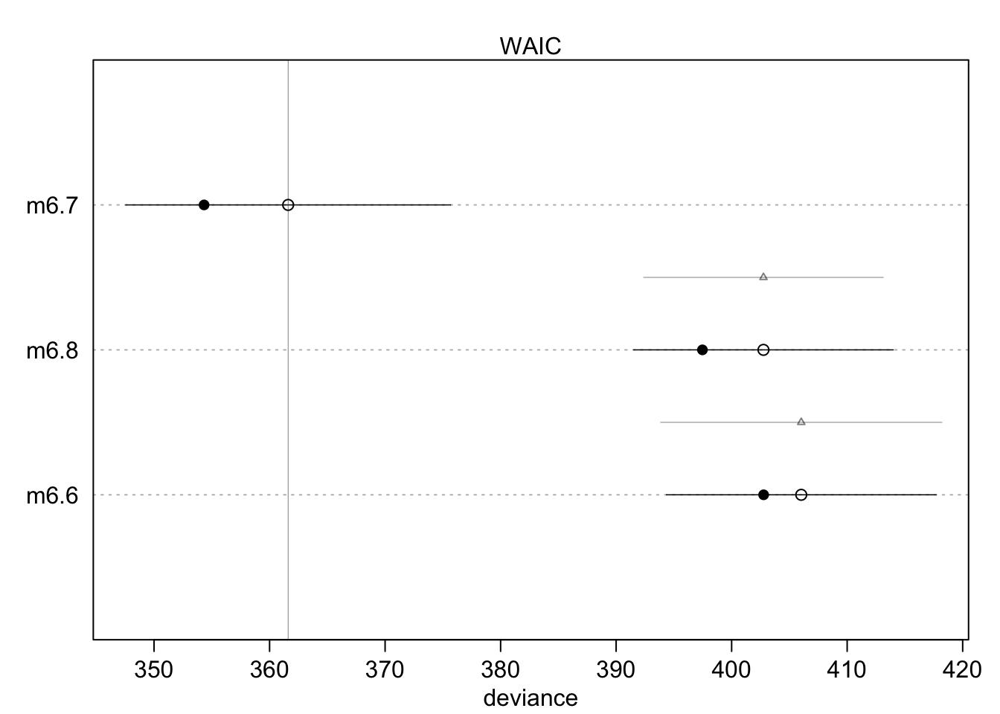
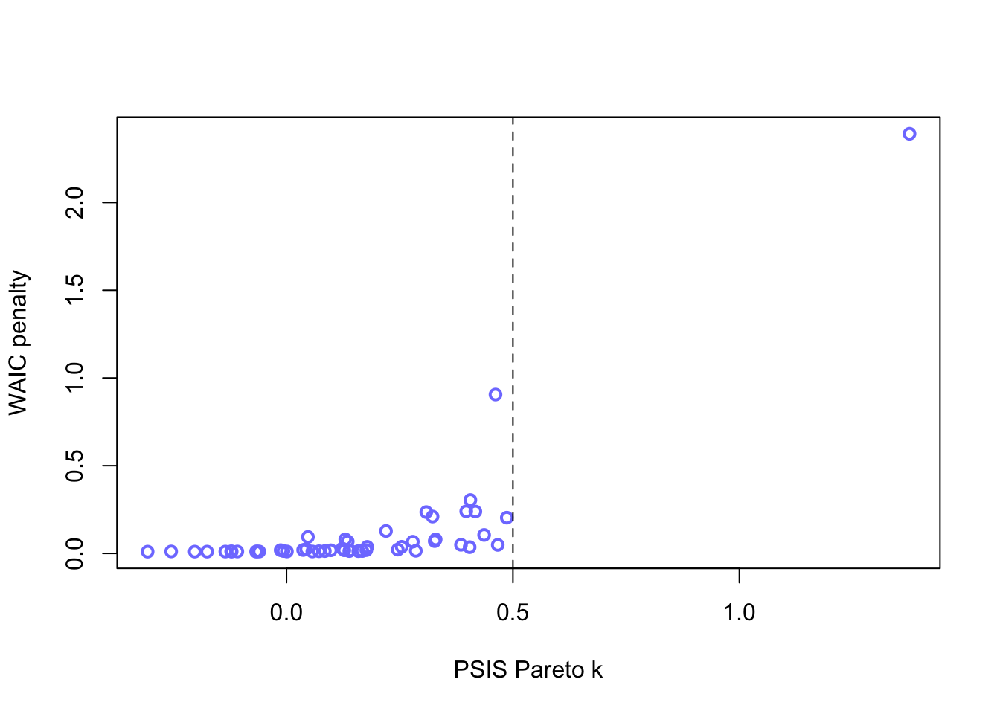

library(rethinking)Ch7: Ulysses’ Compass
NoteChapter Overview
Overfitting as a universal phenomenon by which models with more parameters fit a sample better, even when additional parameters are meaningless. Two tools to overcome overfitting problems: regularizing priors and estimate of out-of-sample accuracy (WAIC and PSIS).
Regularizing priors reduce overfitting during estimation, and WAIC and PSIS help estimate the degree of overfitting.
Practical functions compare help analyze collections of models fit to the same data.
If after causal estimates, then these tools will mislead. Models must be designed through some other method, not selected on the basis of out-of-sample predictive accuracy. But any causal estimate will still overfit the sample. So you always have to worry about overfitting, measuring it with WAIC /PSIS and reducing it with regularization.
TipTerms
- overfitting
-
occurs when a model learns too much from the sample (having too many parameters), and leads to poor prediction
- underfitting
-
placeholder
- information theory
-
placeholder
- information
-
the reduction of uncertainty when we learn an outcome
- information entropy
-
the uncertainty contained in a probability distribution is the average log-probability of an event
- Kullback-Leibler (KL) divergence
-
the additional uncertainty induced by using probabilities from one distribution to describe another distribution
- log-probability
-
logarithm of standard probability value
- log-pointwise-predictive-density
-
Bayesian version of log-probability score; used to evaluate and compare the out-of-sample predictive accuracy of statistical models; measures how well a model predicts new data by summing the logarithm of the predictive probability of each data point.
- deviance
-
measure of a model’s predictive inaccuracy; -2 * maximum log-likelihood of a fitted model
Indicated how well a model fits the observed data, with lower deviance being better fit
- regularizing priors
-
skeptical prior to reduce overfitting while still allowing the model to learn sample’s regular features. Represents prior beliefs that model parameters should be smaller or closer to 0 but rarely exactly 0.
- cross-validation
-
Splitting the train data into k folds to fit model with some folds and testing it on others to avoid overfitting
Used to estimate out-of-sample predictive accuracy via testing the model’s predictive accuracy on a small part of the sample
- leave-one-out cross-validation
-
model evaluation technique where model is trained on all by one observation and tested on single left-out observation. Repeats for every single observation.
Overall performance calculated by averaging error scores across all observations
- Pareto-smoothed importance sampling (PSIS) leave-one-out cross-validation
-
Highly efficient method of estimating out-of-sample predictive accuracy of model by bypassing the refitting process of leave-one-out cross-validation. via importance sampling (where the weight of an observation depends on its larger impact on the posterior distribution).
- information criteria
-
Statistical metric used to compare models by constructing a theoretical estimate of the relative out-of-sample K-L Divergence
- Widely Applicable Information Criterion (WAIC)
-
Information criterion more general than AIC or DIC, making no assumption about the shape of the posterior. Provides an approximation of the out-of-sample deviance that converges to the cross-validation approximation in a large sample. Target is to guess the K-L Divergence
Lower values of WAIC indicate better performance
- effective number of parameters (“overfitting penalty”)
-
penalty term that measures the model’s complexity; quantifies how much the model’s parameters adapt to the training data, correcting for overfitting
- model comparison
-
analyzing multiple models to understand (1) how different variables influence predictions and (2) in combination with a causal model, implied conditional independencies among variables help us infer causal relationships
- robust regression
-
linear model in which the influence of extreme observations is reduced
- Student-t distribution
-
thicker-tailed distribution that arises from a mixture of Gaussian distributions with different variances.
Can be used to replace Gaussian distribution in order to reduce outlier influence in model estimation
Ockham’s Razor: the model with fewer assumptions is to be preferred
- Doesn’t tell us how to navigate the tradeoff between simplicity and accuracy
Better tool: Ulysses’ compass
Scylla = Overfitting, which leads to poor prediction by learning too much from the data
Charybdis = Underfitting, which leads to poor prediction by learning too little from the data
Third monster = confounding (produce good predictions but can lead to faulty causal inferences)
Need to decide what we want from the model: do we want to understand causes OR to just predict
Two families of approaches to navigate
- Regularizing prior: tell model not to get too excited about the data
- Information Criteria or Cross Validation: model the prediction task and estimate predictive accuracy
Both used in social sciences, get used to both families
Information Theory
The Problem with Parameters
We shouldn’t just add more variables to our models (even when we only care about predictions, rather than causal inferences)
Adding variables (making the model more complex) always improves the fit of the data (i.e., how well a model can retrodict the data used to fit the model)
Measure of fit example: \(R^2\) “variance explained”
easy to compute
\(R^2\) INC as predictor variables are added (even random numbers)
Complex models often predict new data worse
- overfit: sensitive to the exact sample used to fit it → large mistakes when future data is not exactly like past data
Simple models (too few parameters) tend to underfit, systematically over-predicting or under-predicting the data, regardless of how well future data resemble the past data
Example: problematic parameters
Overfitting (more parameters almost always improve fit)
- irrregular features of the data mislead, cannot generalize
sppnames <- c("afarensis","africanus","habilis","boisei",
"rudolfensis","ergaster","sapiens")
brainvolcc <- c(438 , 452 , 612, 521, 752, 871, 1350)
masskg <- c(37.0 , 35.5 , 34.5 , 41.5 , 55.5 , 61.0 , 53.5)
d <- data.frame(species=sppnames, brain=brainvolcc, mass=masskg)Usual for brain size to correlate with body size across species. Question: to what extent do particular species have brains that are larger than expected, after taking body size into account.
Statistical control strategy:
Fit linear regression that models brain size as a function of body size (or the log of these variables for exponential relationship)
Then the remaining variation in brain size is modeled as a function of other variables, like ecology or diet
Trying our multiple models that vary in complexity…
Model 1: Linear model
Rescale the variables to get the model to fit and to understand priors
Standardize body mass (give it mean 0 and SD of 1) and rescale the outcome so that the largest observed value is 1
Don’t standardize brain size - cannot have negative brain
d$mass_std <- (d$mass - mean(d$mass))/sd(d$mass)
d$brain_std <- d$brain / max(d$brain)\[b_i \sim {\sf Normal}(\mu_i, \sigma)\]
\[\mu_i = \alpha + \beta m_i\]
\[\alpha \sim {\sf Normal}(0.5, 1)\]
\[\beta \sim {\sf Normal}(0,10)\]
\[\sigma \sim {\sf Log-Normal}(0,1)\]
Average brain volume \(b_i\) of species \(i\) is a linear function of its body mass \(m_i\)
Priors implications
\(\alpha\) prior: centered on the mean of the brain volume (rescaled) in the data. The average species with average body mass has brain volume with an 89% credible interval from about−1 to 2.
- Ridiculously wide and impossible values
\(\beta\) prior: very flat centered on zero - allows absurdly large positive and negative slopes
Part of the lesson, continue on with absurd priors
m7.1 <- quap(
alist(
brain_std ~ dnorm(mu, exp(log_sigma)),
mu <- a + b*mass_std,
a ~ dnorm(0.5,1),
b ~ dnorm(0,10),
log_sigma ~ dnorm(0,1)
), data=d
)set.seed(12)
s <- sim(m7.1)
r <- apply(s, 2, mean) - d$brain_std
resid_var <- var2(r)
outcome_var <- var2(d$brain_std)
1 - resid_var / outcome_var[1] 0.4774589Function for getting \(R^2\)
R2_is_bad <- function(quap_fit){
s <- sim(quap_fit, refresh=0)
r <- apply(s, 2, mean) - d$brain_std
1 - var2(r) / var2(d$brain_std)
}Model 2: Second-degree polynomial parabolic
\[b_i \sim {\sf Normal}(\mu_i, \sigma)\]
\[\mu_i = \alpha + \beta_1 m_i + \beta_2 m^2\]
\[\alpha \sim {\sf Normal}(0.5, 1)\]
\[\beta \sim {\sf Normal}(0,10) \quad {\sf for} \ j = 1..2\]
\[\sigma \sim {\sf Log-Normal}(0,1)\]
To do this model in quap, we can define β as a vector. The only trick required is to tell quap how long that vector is by using a start list
m7.2 <- quap(
alist(
brain_std ~ dnorm(mu, exp(log_sigma)),
mu <- a + b[1]*mass_std + b[2]*mass_std^2,
a ~ dnorm(0.5, 1),
b ~ dnorm(0,10),
log_sigma ~ dnorm(0,1)
), data=d, start=list(b=rep(0,2)) #here, start list
)Models 3-6: More polynomials
m7.3 <- quap(
alist(
brain_std ~ dnorm( mu , exp(log_sigma) ),
mu <- a + b[1]*mass_std + b[2]*mass_std^2 +
b[3]*mass_std^3,
a ~ dnorm( 0.5 , 1 ),
b ~ dnorm( 0 , 10 ),
log_sigma ~ dnorm( 0 , 1 )
), data=d , start=list(b=rep(0,3)) )
m7.4 <- quap(
alist(
brain_std ~ dnorm( mu , exp(log_sigma) ),
mu <- a + b[1]*mass_std + b[2]*mass_std^2 +
b[3]*mass_std^3 + b[4]*mass_std^4,
a ~ dnorm( 0.5 , 1 ),
b ~ dnorm( 0 , 10 ),
log_sigma ~ dnorm( 0 , 1 )
), data=d , start=list(b=rep(0,4)) )
m7.5 <- quap(
alist(
brain_std ~ dnorm( mu , exp(log_sigma) ),
mu <- a + b[1]*mass_std + b[2]*mass_std^2 +
b[3]*mass_std^3 + b[4]*mass_std^4 +
b[5]*mass_std^5,
a ~ dnorm( 0.5 , 1 ),
b ~ dnorm( 0 , 10 ),
log_sigma ~ dnorm( 0 , 1 )
), data=d , start=list(b=rep(0,5)) )That last model, m7.6, has one trick in it. The standard deviation is replaced with a constant value 0.001. The model will not work otherwise, for a very important reason that will become clear as we plot these monsters.
m7.6 <- quap(
alist(
brain_std ~ dnorm( mu, 0.001),
mu <- a + b[1]*mass_std + b[2]*mass_std^2 +
b[3]*mass_std^3 + b[4]*mass_std^4 +
b[5]*mass_std^5 + b[6]*mass_std^6,
a ~ dnorm( 0.5 , 1 ),
b ~ dnorm( 0 , 10 )
), data=d , start=list(b=rep(0,6)) )Now plot each model… (didn’t include them all, just m7.1 and m7.5)
post <- extract.samples(m7.1)
mass_seq <- seq(from=min(d$mass_std), to=max(d$mass_std), length.out=100)
l <- link(m7.1, data=list(mass_std=mass_seq))
mu <- apply(l,2,mean)
ci <- apply(l,2,PI)
plot(brain_std ~ mass_std, data=d)
shade(ci, mass_seq)
post <- extract.samples(m7.5)
mass_seq <- seq(from=min(d$mass_std), to=max(d$mass_std), length.out=100)
l <- link(m7.5, data=list(mass_std=mass_seq))
mu <- apply(l,2,mean)
ci <- apply(l,2,PI)
plot(brain_std ~ mass_std, data=d)
shade(ci, mass_seq)
As the degree of polynomial defining the mean INC, better \(R^2\) = retrodiction of data. The 5th degree polynomial has \(R^2 = 0.99\). The fit is perfect in degree 6 ( \(R^2 = 1\) ) because there are enough parameters to assign to each point of data (7 parameters including alpha → 7 species to predict brain sizes).
Underfitting
Overfitting makes nonsensical models outside the sample. Underfitting produces models that are inaccurate within and outside the sample (learn to little).
Underfit models are insensitive to the sampled data (removing data point gets you the same regression line)
Note
Bias-variance trade-off: Bias related to underfitting; variance to overfitting.
Entropy and accuracy
To navigate between underfitting/overfitting, you need to pick a criterion of model performance (target).
- Establish measurement scale for distance from perfect accuracy
- Info theory provides natural measurement scale for distance between two probability distributions
- Establish deviance as an approximation of relative distance from perfect accuracy
- Establish that only deviance out-of-sample is of interest
Defining the target (no universally best target)
Two major dimensions to worry about:
- Cost-benefit analysis: how much does it cost when we’re wrong, how much do we win when we’re right?
- Accuracy in context: some prediction tasks are inherently easier than others. Even if ignoring cost/benefit, still need to judge “accuracy” that accounts for how much a model could possibly improve prediction
Note
Two weather forecasters:
Original: One makes graded predictions (chance of rain on certain days: 1 1 1 0.6 0.6 0.6)
Newcomer: One makes blanket predictions (chance of rain constant across all days: 0, 0, 0, 0,…,0)
For the coarse of the 10 days (rains 3 days, sunny 7), the overall “hit rate” is higher for the newcomer.
But there are additional costs to these predictions. Audience will want to know when to bring an umbrella or not: happiness will decrease significantly if they get drenched in rain (-5 pts happiness), and decrease only slightly for the mild inconvenience of carrying an umbrella on a sunny day (-1).
So if we take the cost under consideration: the original forecaster nets \(3 \times (-1) + 7 \times (-0.6) = -7.2\) happiness. But the newcomer nets \(3 \times (-5) =-15\) happiness. So the original forecast is better.
Accuracy is different from hit rate. How to define accuracy? If we define accuracy as predicting the exact sequence of days, this means computing the probability of a correct prediction for each day, then multiplying them together to get the joint probability of correctly predicting the observed sequence.
- This is the definition of accuracy that is maximized by the correct Bayesian model
So the probability for the original forecaster is \(1^3 \times 0.4^7 \approx 0.005\), while the newcomer’s is \(0^3 \times 1^7 = 0\) (has 0 probability of getting the sequence correct since they never expect rain).
Newcomer has higher average probability of being correct, terrible joint prob of being correct.
So true data-generating model will have highest joint probability. Also called the log scoring rule because typically the logarithm of the joint probability is reported.
“True” probabilities = right probabilities given our state of ignorance (which is described by the model). Probability is IN THE MODEL, not in the world.
Use log probability of the data to score the accuracy of competing models.
How to measure distance from perfect prediction
Information Theory provides solution as to how to measure the distance of a model’s accuracy from a target
Asks how much is our uncertainty reduced by learning an outcome?
EX: Forecasts issued in advance when weather is uncertain. When actual day arrives, weather is no longer uncertain. The reduction in uncertainty = measure of how much we have learned (how much information we derived from observing the outcome)
Develop precise definigiont of uncertainty → provide baseline measure of how hard it is to predict + how much improvement is possible
- Information
-
The measured decrease in uncertainty when we learn an outcome
How to develop a principled way to quantify uncertainty (inherent in probability distribution)
EX, 2 possible weather events on particular day - either sunny or rainy (occur with some prob adding up to 1)
Function that uses the probabilities of outcomes and produces a measure of uncertainty
Many ways to measure uncertainty. Most common way to start with naming some properties a measure of uncertainty should possess:
- Should be continuous
- Should increase as the number of possible events increases
- Should be additive
- i.e., if we first measure the uncertainty of rain or shine (2 possible events) and then the uncertainty of hot or cold (2 diff possible events), the uncertainty over the 4 combos - rain/hot, rain/cold, shine/hot, shine/cold - should be the sum of the separate uncertainties
Information Entropy
If there are \(n\) different possible events and each event \(i\) has a probability \(p_i\), and we call the list of probabilities \(p\), then the unique measure of uncertainty we seek is:
\[H(p) = - E\;{\sf log}(p_i) = - \sum^n_{i-1}p_i\;{\sf log}(p_i) \]
The uncertainty contained in a probability distribution is the average log-probability of an event.
“Event” - particular type of weather, bird species, nucleotide in DNA sequence
Example with the weather forecast -
(1) Probabilities of rain (p_1 = 0.3) and shine (p_2 = 0.7)
p <- c(0.3, 0.7)
-sum(p*log(p))[1] 0.6108643(2) Now consider Death Valley where p_1 = 0.01 and p_2 = 0.99.
p <- c(0.01, 0.99)
-sum(p*log(p)) [1] 0.05600153- Much lower uncertainty because it hardly rains in Death Valley → much less uncertainty about any given day
(3) Now, consider snow. Probabilities of sun, rain, and snow are p_1 = 0.7, p_2 = 0.15, and p_3 = 0.15, respectively
p <- c(0.7, 0.15, p=0.15)
-sum(p*log(p)) [1] 0.8188085- Uncertainty/entropy tends to increase, due to the added dimensionality of the prediction problem
NoteEntropy equation details
Multiplying the average log-probability by−1 just makes the entropy H increase from zero, rather than decrease from zero. It’s conventional, but not functional.
The logarithms above are natural logs (base e), but changing the base rescales without any effect on inference. Binary logarithms, base 2, are just as common. As long as all of the entropies you compare use the same base, you’ll be fine.
The only trick in computing H is to deal with the inevitable question of what to do when p_i = 0. The log(0) = −∞, which won’t do. However, L’Hôpital’s rule tells us that \(lim_{p_i → 0} →p_i log(p_i) = 0\). So just assume that 0 log(0) = 0, when you compute H. In other words, events that never happen drop out. Just remember that when an event never happens, there’s no point in keeping it in the model.
\(H\) provides a way to quantify uncertainty → a precise way to measure how hard it is to hit the target
How to use entropy to measure how far the model is from the target
KL-Divergence
- KL-Divergence
-
the additional uncertainty induced by using probabilities from one distribution to describe another distribution
The average difference in log probability between the target (p) and model (q)
Example: true distribution of events is p_1 = 0.3, p_2 = 0.7. If we believe instead that these events happen with probabilities q_1 = 0.25, q_2 = 0.75, how much additional uncertainty have we introduced, as a consequence of using q= {q_1, q_2} to approximate p= {p_1, p_2}?
\[D_{KL} = \sum_ip_i({\sf log}(p_i)-{\sf log}(q_i)) = \sum_i p_i{\sf log}(\frac{p_i}{ q_i}) \]
Divergence → the difference between two entropies: the entropy of the target distribution \(p\) and the cross entropy arising from using \(q\) to predict \(p\). When \(p=q\) we know the actual probabilities of the events:
\[D_{KL}(p,q) = D_{KL}(p,p) = \sum_ip_i({\sf log}(p_i)-{\sf log}(p_i)) = 0 \]
As q grows more different from p, the divergence \(D_{KL}\) also grows.
As an approximating function \(q\) becomes more accurate, \(D_{KL}(p, q)\) will shrink.
- Candidate distribution that minimizes the KL divergence = closest to target
NoteCross entropy and directionality
Events arise according to actual probability, p, but are expected according to the \(q\) probabilities distributions, so the entropy is inflated, depending on how diff p and q are.
- Divergence defined as additional entropy induced by using q.
Directionality matters: H(p,q) ≠ H(q,p)
Example: using Earth’s water:land ratio {0.7,0.3} to predict Mar’s ratio {0.01, 0.99} gives us KL divergence of 1.14. But if we use Mars’ ratio to predict Earth’s, then the divergence is 2.62.
Going from Mars → Earth: Mars has so little water, we’d be super surprised when we most likely land on water on Earth.
Going from Earth → Mars: Earth has good amounts of both water and land, won’t be nearly as surprised when we inevitably land on dry land on Mars, since 30% of Earth is land.
How to estimate divergence
Having identified the right measure of distance, we now need a way to estimate it in real statistical modeling tasks.
But \(p\) is unknown! That’s okay, though, because we’re only interested in the different divergences of diff candidates, say \(q\) and \(r\). Most cases, \(p\) just subtracts out because \(E{\sf log}(p_i)\) term is in both \(q\) and \(r\) divergences - no effect on the distance between q and r (and which is closer to the target \(p\)).
Compare average log-probability from each model to get estimate of the relative distance of each model from target.
- Absolute magnitude is not interpretable. Only the difference \(E\log (q_i)−E\log (r_i)\) informs us about the divergence of each model from the target p
Convention to sum over all the observations \(i\), to yield a total score for model \(q\)
\[S(q) = \sum_i{\sf log} (q_i)\]
This log-probability score is gold standard to compare the predictive accuracy of different models
- Estimate of \(E \; log(q_i)\) but without the final step of dividing by the number of observations
log-pointwise-predictive-density
Computing this core:
Use entire probability distribution
- Since the parameters have distributions, the predictions also have a distribution
How? Find the log of the average probability for each observation \(i\), where the average is taken over the posterior distribution
- Use function
lppdor log-pointwise-predictive-density for the calculation onquapmodels
- Use function
set.seed(1)
lppd(m7.1, n=1e4)[1] 0.6098669 0.6483439 0.5496093 0.6234934 0.4648144 0.4347605 -0.8444633Each of the values: log-probability score for a specific observation (7 observations in those data)
Summing the values → total log-probability score for the model and data
- Larger values are better = larger average accuracy
Deviance: like lppd score, but multiplied by -2 (smaller values are better)
Scoring the right data
log-probability has same problem as \(R^2\) - always improves as model gets more complex
- measure of retrodictive accuracy, not predictive accuracy
set.seed(1)
sapply(list(m7.1, m7.2, m7.3,m7.4,m7.5,m7.6), function(m) sum(lppd(m)))[1] 2.490390 2.566165 3.695911 5.333750 14.109226 39.448020Still using the training data though (used to fit the model, parameters estimated) - now need to use those estimates for new sample, the test sample.
Note
- Suppose training set of size N
- Compute posterior distribution of a model for the training sample, and compute the score on the training sample. Call this score \(D_{train}\)
- Suppose another sample of size N from the same process, this is the test sample
- Compute the score on the test sample, using the posterior trained on the training sample. Call this new score \(D_{test}\)
"N <- 20
kseq <- 1:5
dev <- sapply(kseq, function(k){
print(k);
r <- mcreplicate( 1e4 , sim_train_test( N=N, k=k ) , mc.cores=4 )
c(mean(r[1,]), mean(r[2,]), sd(r[1,]), sd(r[2,]))
})
"[1] "N <- 20 \nkseq <- 1:5 \ndev <- sapply(kseq, function(k){\n print(k);\n r <- mcreplicate( 1e4 , sim_train_test( N=N, k=k ) , mc.cores=4 )\n c(mean(r[1,]), mean(r[2,]), sd(r[1,]), sd(r[2,]))\n})\n"- Once simulations are complete,
devwill be a 4-by-5 matrix of means and SDs. To r
#plot(1:5, dev[1,], ylim=c(min(dev[1:2,])-5, max(dev[1:2,])+10),
# xlim=c(1,5.1), xlab="number of parameters" , ylab="deviance" ,
# pch=16 , col=rangi2 )
#mtext( concat( "N = ",N ) )
#points( (1:5)+0.1 , dev[2,] )
#for ( i in kseq ) {
# pts_in <- dev[1,i] + c(-1,+1)*dev[3,i]
# pts_out <- dev[2,i] + c(-1,+1)*dev[4,i]
# lines( c(i,i) , pts_in , col=rangi2 )
# lines( c(i,i)+0.1 , pts_out )
#}While deviance on training data always improves with additional predictor variables, deviance on future data may or may not, depending upon both the true data-generating process and how much data is available to precisely estimate the parameters.
Regularization, or Golem Training
- Use skeptical prior to prevent model from getting over-excited about the training sample
skeptical prior: prior that slows the rate of learning from the same
- Regularizing prior: most common type of skeptical prior that reduces overfitting while still allowing the model to learn the regular features of the sample
Consider this Gaussian model
| $ y_i {Normal}(_i, ) $ | |
| \(\mu_i = \alpha + \beta x_i\) | Assume predictor \(x\) is standardized so that its SD is 1 and mean 0. |
| $ {Normal}(0,100)$ | Then prior \(\alpha\) is nearly flat prior that has no practical effect on inference |
| \(\beta \sim {\sf Normal}(0,1)\) | Prior on \(\beta\) is narrower, meant to regularize. This prior means that, before seeing the data, the machine should be skeptical of values above 2 and below -2 (a Gaussian prior with SD of 1 assigns only 5% plausibility to values above and below 2 SDs. Interpretation: a change of 1 SD in \(x\) is very unlikely to produce 2 units of change in the outcome |
| \(\sigma \sim {\sf Uniform}(0,10)\) |
Centering the prior on zero is conservative. But the narrower the prior, the more skeptical of parameter values far from zero.
Narrow: \({\sf Normal}(0,1)\)
Narrower: \({\sf Normal}(0,0.5)\)
Narrowest: \({\sf Normal}(0,0.2)\) → Most skeptical prior here
The strength of the skepticism depends on the data and model
Tuning: If too skeptical - prevent model from learning from data. Need a way to tune them.
Cross-validation: common technique to reduce overfitting by splitting data into “train” and “test” samples, then trying different priors and select the one that provides the smallest deviance from test samples
- Need a lot of data
Also want a way to predict a model’s out-of-sample deviance, to forecast its predictive accuracy, using only the sample we have.
Note
Multilevel models as adaptive regularization
- central device = learn the strength of the prior from the data itself
Ridge regression: linear models with slope parameters that use Gaussian priors centered at 0
takes as input a precision \(\lambda\) that describes the narrowness of the prior.
\(\lambda >0\) reduces overfitting
If \(\lambda\) is too big, then risk underfitting
Predicting predictive accuracy
Evaluate models without out-of-sample with cross-validation and info criteria. These try to guess how well models will perform, on average, in predicting new data. Both produce extremely similar approximations.
Cross-validation
Divide sample in a number of “folds” (chunks). Model is asked to predict each fold, after training on all the others. Then, average over the score for each fold to get estimate of out-of-sample accuracy.
Minimum number of folds: 2
Other extreme: could make each point observation a folk and fit as many models as you have individual observations
cv_quapto perform cross-validation onquapmodels
How many folds is best?
Common advice is that both too few and too many folds produce less reliable approximations of out-of-sample performance
- However, not always the case
Leave-one-out cross-validation (LOOCV): use the maximum number of folds, resulting in leaving out one unique observation in each fold
- default in
cv_quap
- default in
Approximate cross-validation score without actually running the model over and over again
Use the “importance” (weight) of each observation to the posterior distribution
weight: some observations have larger impact on the posterior distribution (if we remove an important observation, the posterior changes more)
key intuition: An observation that is relatively unlikely is more important than one that is relatively expected.
Pareto-smoothed importance sampling cross-validation (PSIS): uses importance sampling (uses the importance weights approach to approximate cross-validation score)
Pareto-smoothing technique makes importance weights more reliable
Uses the Pareto distribution to derive a more reliable cross-validation score without actually doing any cross-validation
Also provides feedback about its own reliability by noting particular observations with very high weights that could make the PSIS score inaccurate
Information Criteria
Constructs a theoretical estimate of the relative out-of-sample K-L Divergence
The distance between train and test pairs (with flat priors) is approx twice the number of parameters in each model
For ordinary linear regressions with flat priors, the expected overfitting penalty is about twice the number of parameters
Phenomenon behind information criteria
| Col1 | Col2 | Col3 |
|---|---|---|
| Akaike Information Criteria (AIC) | Simple estimate of average out-of-sample deviance \[AIC = D_{train}+ 2p = -2{\sf lppd}+2p\] \(p\) = number of free parameters in posterior distribution |
The dimensionality of the posterior distribution is a natural measure of the model’s overfitting tendency. More complex models tend to overfit more, directly in proportion to number of parameters Only reliable when:
|
| Deviance Information Criterion (DIC) | More general than AIC Okay with informative priors, but still assumes that the posterior is multivariate and that \(N >>k\) |
|
| Widely Applicable Information Criterion (WAIC) | $WAIC(y,) = -2({lppd} - *ivar* p (y_i|)) $ where \(y\) is the observations and \(Θ\) is the posterior distribution |
More general than AIC or DIC Makes no assumption about the shape of the posterior. Provides an approximation of the out-of-sample deviance that converges to the cross-validation approximation in a LARGE sample. Can disagree in a finite sample because of its different target (K-L Divergence) |
Widely Applicable Information Criterion (WAIC): the log-posterior-predictive density (lppd) plus a penalty proportional to the variance in the posterior predictions
\[WAIC(y,\Theta) = -2({\sf lppd} - \sum_ivar_\theta {\sf log} p (y_i|\theta)) \]
Penalty term is the sum: means “compute the variance in log-probabilities for each observation \(i\), and then sum up these variances to get the total penalty.”
Each observation has own penalty score. Since these scores measure overfitting risk, you can assess overfitting risk at the level of each observation
also called Effective number of parameters \(p_{WAIC}\) BUT is a misleading label (less to do with number than with relations among parameters)
Call it “the overfitting penalty”
WAICinrethinkingpackage - computes WAIC for a model fit withquaporulamorrstan
Like PSIS, WAIC is pointwise. Prediction is considered case by case, or point-by-point, in the data
Useful since some observations are much harder to predict than others and may also have different uncertainty
Pro: provides a (very) approximate estimate of the standard error of our estimate of out-of-sample deviance
for this SE, calculate WAIC for each observation and then exploit the central limit theorem to provide a measure of the standard error:
\[s_{\sf WAIC} = \sqrt{(N{\sf var} - 2 (lppd_i - p_i)}\]
- Where \(N\) is the number of observations, \(p_i\) is the penalty term for only observation \(i\)
Caution
The validity of All these strategies to guess out-of-sample accuracy depends on the predictive task we have in mind. Not all predictions can reasonably take the form that we’ve been assuming for the train-test simulations.
For example, time series models - each prediction depends on the previous observation (which is a predictor variable for the next observation) Not easy to think of each observation as independent of/exchangeable with the others
Comparing CV, PSIS, and WAIC
WAIC is unsurprisingly a little better at predicting out-of-sample deviance, because that is what it aims to predict.
Cross-validation (CV) is a trick that estimates out-of-sample deviance as the sample size increases, but it doesn’t aim for the right target at small sample sizes. And since PSIS approximates CV, it has the same issue.
All three do a very good job on average, and all three have the same error.
PSIS and WAIC perform very similarly in context of ordinary linear models
- differences are with other model types, where the posterior distributions are not approx Gaussian or in the presence of observations that strongly influence the posterior
CV and PSIS have higher variance as estimators of the K-L Divergence, so we should expect WAIC be better in many cases
PSIS has distinct advantage in warning the user when it’s unreliable (despite slight disadvantage in accuracy)
- The k values that PSIS computes for each observation indicate when the PSIS score may be unreliable, as well as identify which observations are at fault
The distance between models is what’s useful, not the absolute value of the deviance
Model Comparison
Need to evaluate models out-of-sample (not just by looking at fit to the sample - which favors more and more complex models)
Common to perform model selection: choosing the model with the lowest criterion value and then discarding the others
- DO NOT DO MODEL SELECTION (discards the information about relative model accuracy contained in the differences among the CV/PSIS/WAIC value)
Criteria purpose: measure expected predictive value of the variable on the right scale, accounting for overfitting; provide a way to measure the overfitting tendency of a model, helping us to design models and understand how statistical inference works.
Model comparison: more general approach that uses multiple models to understand both how different variables influence predictions, and in combo with a causal model, implied conditional independencies among variables help us infer causal relationships.
Two examples
- About the distinction between comparing models for predictive performance vs for inferring causation
- About the pointwise nature of model comparison and what inspecting individual points can reveal about model performance and mis-specification; introducing more robust alternative to Gaussian regression
Ex 1: Model Mis-selection
Inferring cause and making predictions are different tasks. CV and WAIC aim to find models that make good predictions - don’t solve any causal inference problem.
Highly confounded models can still make good predictions (at least in short-term). Backdoor paths give us valid info about statistical associations in the data. Can improve prediction, as long as we don’t intervene on system, and the future is like the past.
- But since our working def of knowing a cause is that we can predict the consequences of an intervention - a good PSIS or WAIC score does not generally indicate a good causal model
Back to the plant growth and fungus example from Ch 6.
m6.6model with just interceptm6.7model with both treatment and fungus (post-treatment variable)m6.8model that includes treatment but not fungus → the one that allowed us to correctly infer the causal influence of treatment
set.seed(71)
N <- 100
# simulate initial heights
h0 <- rnorm(N,10,2)
# assign treatments and simulate fungus & growth
treatment <- rep(0:1, each=N/2)
fungus <- rbinom(N,size=1, prob=0.5 - treatment*0.4)
h1 <- h0 + rnorm(N,5 - 3*fungus)
# compose a clean data frame
d <- data.frame(h0=h0, h1=h1, treatment=treatment, fungus=fungus)
m6.6 <- quap(
alist(
h1 ~ dnorm( mu , sigma ),
mu <- h0*p,
p ~ dlnorm( 0 , 0.25 ),
sigma ~ dexp( 1 )
), data=d )
m6.7 <- quap(
alist(
h1 ~ dnorm(mu, sigma),
mu <- h0*p,
p <- a + bt*treatment + bf*fungus,
a ~ dlnorm(0,0.2),
bt ~ dnorm(0,0.5),
bf ~ dnorm(0,0.5),
sigma ~ dexp(1)
), data=d
)
m6.8 <- quap(
alist(
h1 ~ dnorm(mu, sigma),
mu <- h0*p,
p <- a + bt*treatment,
a ~ dlnorm(0,0.2),
bt ~ dnorm(0,0.5),
sigma ~ dexp(1)
), data=d
)set.seed(11)
WAIC(m6.7) WAIC lppd penalty std_err
1 361.4511 -177.1724 3.5532 14.17035First value guess for out-of-sample deviance
lppd
effective number of parameters pWAIC
Standard error of WAIC value
To easily compare multiple models, use convenience function compare from rethinking:
set.seed(77)
compare(m6.6, m6.7, m6.8, func=PSIS) PSIS SE dPSIS dSE pPSIS weight
m6.7 361.9879 14.35614 0.00000 NA 3.888398 1.000000e+00
m6.8 402.8100 11.34305 40.82209 10.49435 2.662957 1.366454e-09
m6.6 405.9378 11.72436 43.94992 12.24690 1.593079 2.860200e-10Column 1: WAIC values
Smaller values are better
Models ordered by best WAIC to worst
- Model including the fungus variable has smallest WAIC, as promised
Column 2: pWAIC, penalty term of WAIC
- These values are close to, but slightly below the number of dimensions in the posterior of each model, which is expected in lineaer regressions with regularizing priors
Column 3: dWAIC, difference between each model’s WAIC and best WAIC in set
0 for best model
m6.7 is about 40 units of deviance smaller than both other models
intercept model m6.6 is 3 units worse than m6.8
Are these big differences or small differences? → Are the models easily distinguished by their expected out-of-sample accuracy?
- need to consider error in WAIC estimates
Columns 4: SE, standard error of each WAIC
- expect out-of-sample accuracy to be normally distributed with mean equal to the reported WAIC value and SD equal to the standard error
Column 5: dSE, standard error of the models’ difference
each difference in WAIC values has a standard error
To compute the standard error of the difference between models m6.7 and m6.8, we just need the pointwise breakdown of the WAIC values:
set.seed(91) waic_m6.7 <- WAIC( m6.7 , pointwise=TRUE )$WAIC waic_m6.8 <- WAIC( m6.8 , pointwise=TRUE )$WAIC n <- length(waic_m6.7) diff_m6.7_m6.8 <- waic_m6.7 - waic_m6.8 sqrt( n*var( diff_m6.7_m6.8 ) )[1] 10.35785
The difference between the models is 40.9 and the standard error about 10.4. If we imagine the 99% (corresponding to a z-score of about 2.6) interval of the difference, it’ll be about:
40.0 + c(-1,1)*10.4*2.6[1] 12.96 67.04So yes, these models are very easy to distinguish by expected out-of-sample accuracy. Model m6.7 is a lot better. You might be able to see all of this better, if we plot the compare table:
plot(compare(m6.6, m6.7, m6.8))
filled points: in-sample deviance values
open points: WAIC values
- Naturally, each model does better in-sample than it is expected to do out-of-sample
line segments: standard error of each WAIC
light gray line segment with triangle: standard error of the difference in WAIC between two models
WAIC cannot be used to infer causation. Says that m6.7 is the best, even though this one contained the post-treatment variable (pipe confound between treatment and outcome)
since fungus is more highly correlated with the outcome, a model using it is likely to predict better. WAIC did its job. It’s job is not to infer causation. It’s job is to guess predictive accuracy.
Does not mean WAIC/CV/PSIS are useless - provides useful measure of the expected improvement in prediction that comes from conditioning on the fungus
Comparing m6.6 (intercept only) to m6.8 (with treatment only)
- WAIC treats the two models as quite similar. Difference of only 3 units of deviance
Calculate the SE of the difference:
set.seed(92)
waic_m6.6 <- WAIC( m6.6 , pointwise=TRUE )$WAIC
diff_m6.6_m6.8 <- waic_m6.6 - waic_m6.8
sqrt(n*var(diff_m6.6_m6.8))[1] 4.858923The compare table doesn’t show, but did calculate. Need the dSE slot of the return
set.seed(93)
compare(m6.6, m6.7,m6.8)@dSE m6.6 m6.7 m6.8
m6.6 NA 12.20638 4.934361
m6.7 12.206385 NA 10.426574
m6.8 4.934361 10.42657 NAThis matrix contains all of the pairwise difference standard errors for the models you compared.
Notice that the standard error of the difference for m6.6 and m6.8 is bigger than the difference itself. We really cannot easily distinguish these models on the basis of WAIC.
Does this mean that the treatment doesn’t work? Of course not. We know that it works. We simulated the data. And the posterior distribution of the treatment effect, bt in m6.8, is reliably positive. But it isn’t especially large. So it doesn’t do much alone to improve prediction of plant height. There are just too many other sources of variation.
This result just echoes the core fact about WAIC (and CV and PSIS): It guesses predictive accuracy, not causal truth. A variable can be causally related to an outcome, but have little relative impact on it, and WAIC will tell you that.
weight element of compare table
these values are traditional way to summarize relative support for each model - always sum to 1 within set of compared models
used in model averaging (family of methods for combining the predictions of multiple models
Ex 2: Outliers and other illusions
Divorce example from Ch 5, posterior predictions for a few States were hard to model (Idaho was an outlier).
- Individual points like Idaho tend to be very influential in ordinary regression models
Refit the three divorce models from Ch 5:
library(rethinking)
data("WaffleDivorce")
d <- WaffleDivorce
d$A <- standardize(d$MedianAgeMarriage)
d$D <- standardize( d$Divorce )
d$M <- standardize( d$Marriage )
m5.1 <- quap(
alist(
D ~ dnorm(mu, sigma),
mu <- a + bA * A,
a ~ dnorm(0,0.2),
bA ~ dnorm(0,0.5),
sigma ~ dexp(1)
),data=d
)
m5.2 <- quap(
alist(
D ~ dnorm(mu,sigma),
mu <- a + bM * M,
a ~ dnorm(0,0.2),
bM ~ dnorm(0,0.5),
sigma ~ dexp(1)
), data = d
)
m5.3 <- quap(
alist(
D ~ dnorm(mu, sigma),
mu <- a + bM*M + bA*A,
a ~ dnorm(0,0.2),
bM ~ dnorm(0,0.5),
bA ~ dnorm(0,0.5),
sigma ~ dexp(1)
), data=d
)precis(m5.1) mean sd 5.5% 94.5%
a 5.030230e-08 0.09737869 -0.1556299 0.1556300
bA -5.684034e-01 0.10999969 -0.7442042 -0.3926027
sigma 7.883248e-01 0.07801112 0.6636480 0.9130017precis(m5.2) mean sd 5.5% 94.5%
a 1.692684e-05 0.10824643 -0.1729818 0.1730156
bM 3.500727e-01 0.12592733 0.1488165 0.5513289
sigma 9.102655e-01 0.08986241 0.7666480 1.0538829precis(m5.3) mean sd 5.5% 94.5%
a -1.807829e-07 0.09707612 -0.1551466 0.1551462
bM -6.540088e-02 0.15077301 -0.3063653 0.1755635
bA -6.135232e-01 0.15098363 -0.8548242 -0.3722222
sigma 7.851189e-01 0.07784362 0.6607098 0.9095280- remember: marriage rate M has little association with divorce rate D, once age at marriage A is included in m5.3
Now compare these models using PSIS
set.seed(24071847)
compare(m5.1,m5.2, m5.3, func=PSIS)Some Pareto k values are high (>0.5). Set pointwise=TRUE to inspect individual points.
Some Pareto k values are high (>0.5). Set pointwise=TRUE to inspect individual points.Some Pareto k values are very high (>1). Set pointwise=TRUE to inspect individual points. PSIS SE dPSIS dSE pPSIS weight
m5.1 127.5665 14.69485 0.000000 NA 4.671425 0.8340176323
m5.3 130.8062 16.15696 3.239685 1.808671 6.578663 0.1650769827
m5.2 141.2178 11.56557 13.651299 10.923820 4.057204 0.0009053851Note that m5.1 (the one that omits M) is at the top
Since marriage rate has very little association with the outcome, model the omits it has slightly better out-of-sample performance (despite fitting worse than m5.3, the model with both predictors).
Difference between the top two models is only 1.8, with a standard error of 0.9, so the models make similar predictions
- typical pattern when some predictor has a very small association with the outcome
Note that you receive message
Some Pareto k values are high (>0.5)means the smoothing approximation the PSIS uses is unreliable for some points
recall when a point’s Pareto \(k > 0.5\), the importance weight can be unreliable
These points tend to be outliers with unlikely values → highly influential, harder to estimate out-of-sample accuracy (new sample unlikely to contain same outliers, could make out-of-sample predictions worse than expected)
WAIC also vulnerable to outliers, but doesn’t have same automatic warning (measure risk instead thru the estimate of overfitting penalty)
Use pointwise=TRUE to PSIS() to look at individual states and see which ones are causing the problem.
- Get a matrix with each observation on a row and the PSIS info, including Pareto \(k\) values, in columns
set.seed(24071847)
PSIS_m5.3 <- PSIS(m5.3, pointwise = TRUE)Some Pareto k values are very high (>1). Set pointwise=TRUE to inspect individual points.# also plot the individual penalty values from WAIC to show relationship between Pareto k and info theoretic prediction penalty
set.seed(24071847)
WAIC_m5.3 <- WAIC(m5.3, pointwise = TRUE)
plot(PSIS_m5.3$k, WAIC_m5.3$penalty, xlab="PSIS Pareto k", ylab="WAIC penalty", col=rangi2, lwd=2)
abline(v=0.5, lty = "dashed")
Individual points are states, with Pareto k on x-axis and WAIC’s overfitting penalty on the y-axis
Idaho had high Pareto k value (above 1) and large penalty term (over 2)
Recall, ID has very low divorce rate for its age at marriage → highly influential, exerts more influence on posterior distribution than other states
its Pareto k value is double the theoretical point at which variance becomes infinite (x=0.5)
WAIC penalty >2; the sum of all penalty terms usually equals total free parameters in model → here, 4 parameters and total penalty is 6
Outlier causing additional overfitting risk
What to do about outliers causing additional overfitting risk?
DON’T: drop outliers based only on SDs from the mean outcome value
a point can only be unexpected and highly influential in light of a model;
After you fit a model, the picture changes. If there are only a few outliers, and you are sure to report results both with and without them, dropping outliers might be okay.
But if there are several outliers and we really need to model them, what then?
Basic problem: Gaussian error model is easily surprised (have very thin tails → little probability mass give to observations far from the mean)
Many real phenomena have thicker tails with rare, extreme outcomes
- not measurement errors, but real events containing info about natural processes
Robust Regression: indicates a linear model in which the influence of extreme observations is reduced
one way to use extreme observations and reduce their influence
Common approach: replace Gaussian model with Student’s t distribution
Student’s T distribution
Thicker-tailed distribution arising from a mixture of Gaussian distributions with different variances (which can thicken the tails)
generalized Student-t distribution has same mean µ and scale \(\sigma\) parameters as Gaussian, but also an extra shape parameter \(\nu\) that controls how thick the tails are
dstudentinrethinkingpackage
Large \(\nu\) → Thin tails (converging in the limit \(\nu = \infty\) to a Gaussian distribution)
As \(\nu\) approached 1, tails get thicker and rare extreme observations occur often
When using robust regression, we don’t normally try to estimate \(\nu\) because there aren’t enough extreme observations to do so
- Instead assume \(\nu\) is small (thick tails) in order to reduce the influence of outliers
Re-estimate the divorce model with Student-t distribution with \(\nu = 2\) (just replace dnorm with dstudent:
m5.3t <- quap(
alist(
D ~ dstudent(2, mu, sigma),
mu <- a + bM*M + bA*A,
a ~ dnorm(0,0.2),
bM ~ dnorm(0,0.5),
bA ~ dnorm(0,0.5),
sigma ~ dexp(1)
), data=d
)
PSIS(m5.3t) PSIS lppd penalty std_err
1 133.832 -66.91598 6.988088 11.96837- relative influence of Idaho has reduced
precis(m5.3) mean sd 5.5% 94.5%
a -1.807829e-07 0.09707612 -0.1551466 0.1551462
bM -6.540088e-02 0.15077301 -0.3063653 0.1755635
bA -6.135232e-01 0.15098363 -0.8548242 -0.3722222
sigma 7.851189e-01 0.07784362 0.6607098 0.9095280precis(m5.3t) mean sd 5.5% 94.5%
a 0.015063628 0.09943797 -0.1438575 0.1739847
bM 0.003694418 0.21183429 -0.3348577 0.3422465
bA -0.701173675 0.13046112 -0.9096757 -0.4926716
sigma 0.552717626 0.08006000 0.4247663 0.6806690Comparing m5.3t and m5.3, coefficient
bAhas gotten farther from 0 with student-t distributionIdaho has low divorce rate and low median age at marriage:
when it was influential (
m5.3), it reduced the association between age at marriage and divorcewhen it is less influential (
m5.3t), the association is estimated to be slightly larger